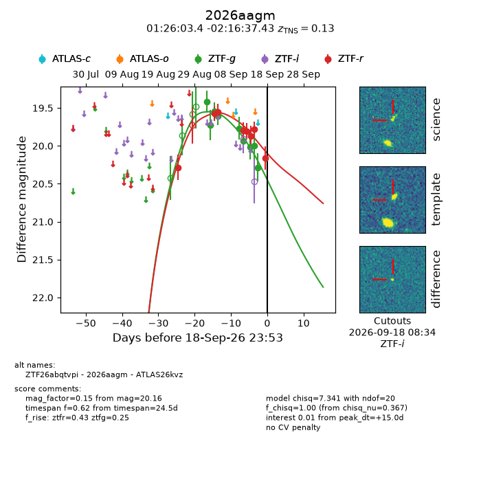
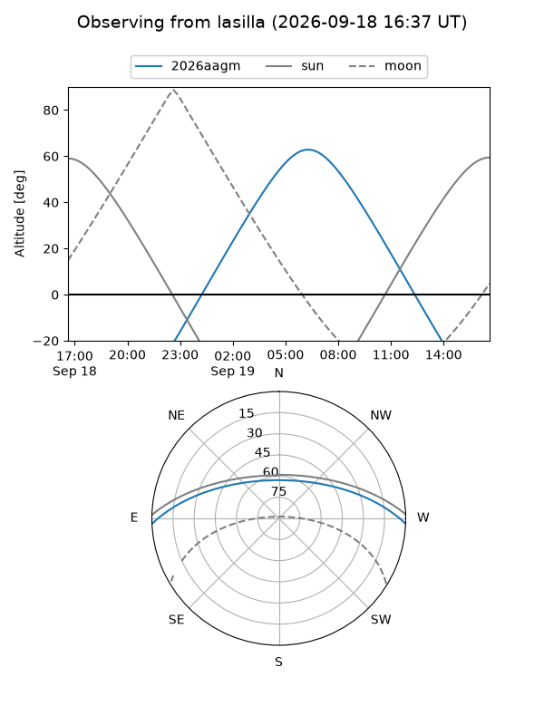
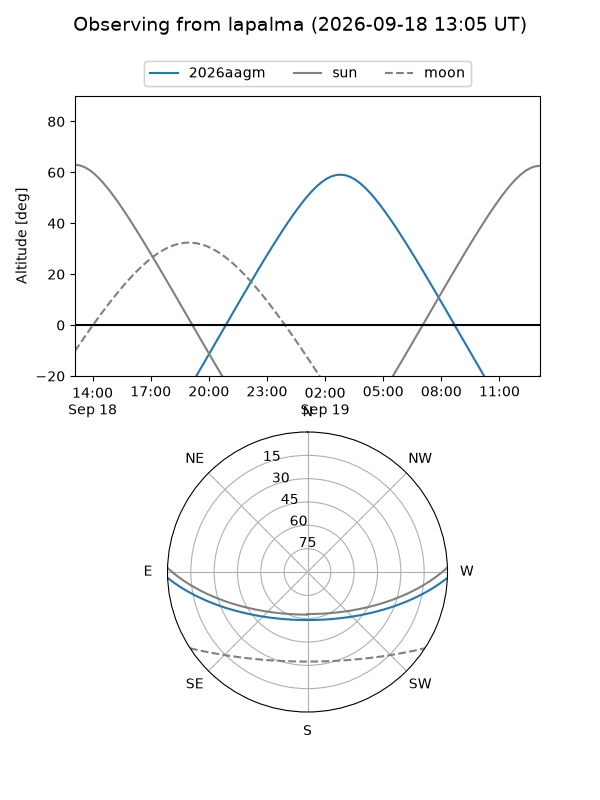
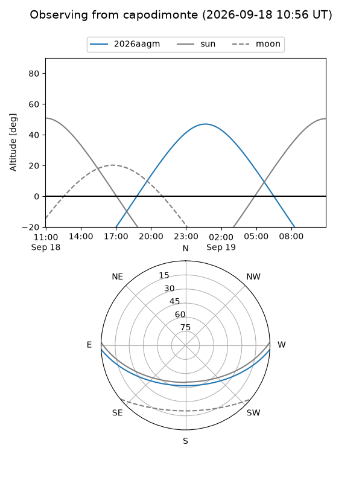
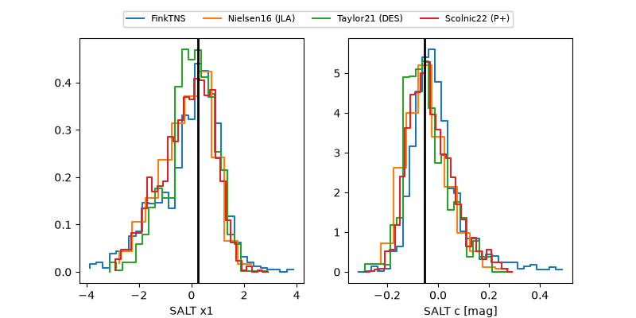

2026aagm
Target 2026aagm at 2026-09-18 23:55
Aliases and brokers:
FINK-ZTF: ztf.fink-portal.org/ZTF26abqtvpi
Lasair-ZTF: lasair-ztf.lsst.ac.uk/objects/ZTF26abqtvpi
ALeRCE-ZTF: alerce.online/object/ZTF26abqtvpi
YSE-PZ: ziggy.ucolick.org/yse/transient_detail/2026aagm
TNS name: wis-tns.org/object/2026aagm
Direct TNS query: direct search
alt names
ZTF26abqtvpi (ztf,fink_ztf)
2026aagm (tns,yse)
ATLAS26kvz (atlas)
Coordinates:
equatorial (ra, dec) = 21.5144,-2.27706
equatorial (HMS+DMS) = 01:26:03.45,-02:16:37.43
galactic (l, b) = (142.8452,-63.80226)
Flags:
TNS type: SN Ia
TNS redshift: 0.1300
peak dt: +15.0
Photometry:
last ztfg=20.28, ztfr=20.16
9 ztfg, 8 ztfr detections
Lightcurve

Visibility



Additional plots
